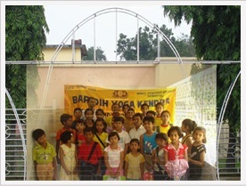

Jamshedpur Bal Yoga Mitra Mandal was formed as a branch of BAL YOGA MITRA MANDAL MUNGER , on the sacred occasion of Akshaya Tritiya i.e. 27th april 2009, at Recreation Club Tube Baridih Jamshedpur . This organization’s mission is to impart yogic education to children, by children. therefore the educational and administrative works of this organization is headed by the young children themselves. Apart from normal children, special kids i.e. Deaf and Dumb, Physically and Mentally challenged children are members of this group. Working together and regular interaction induces a sense of responsibility, leadership and developed confidence among every child at B.Y.M.M.. Integration of traditional knowledge with modern concept is the foundation of Bal Yoga Mitra Mandal’s guiding principle.
In taking forward the objective toward Corporate Social Responsibility, the Welfare Trust of Tube Division, Tata Steel has played a positive role in Various community development activities, one of which is the support extended to the Bal Yoga Mitra Mandal, affilated to Bihar School of Yoga, Munger & Jharkhand Yoga Association
Besides Yoga , every Sunday classes of spoken English, Computer, Fine Arts, Chanting of Mantras are held in the morning. Recitation of holly verses and reading of holly books like Ramcharitramanas and Bhagvad Gita, instills a sense of pride in our cultural heritage among the members. To devlope a sense of selfless service, charity programs are held at various places, where food grains, cloths are donated to the deprived by our members.